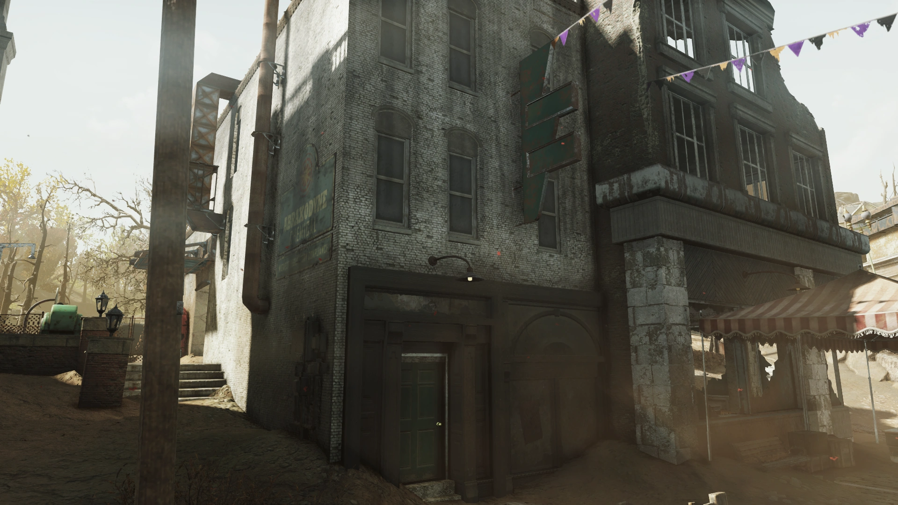
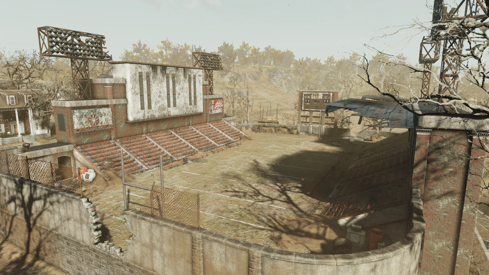
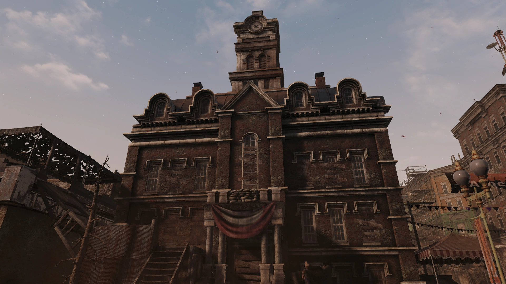
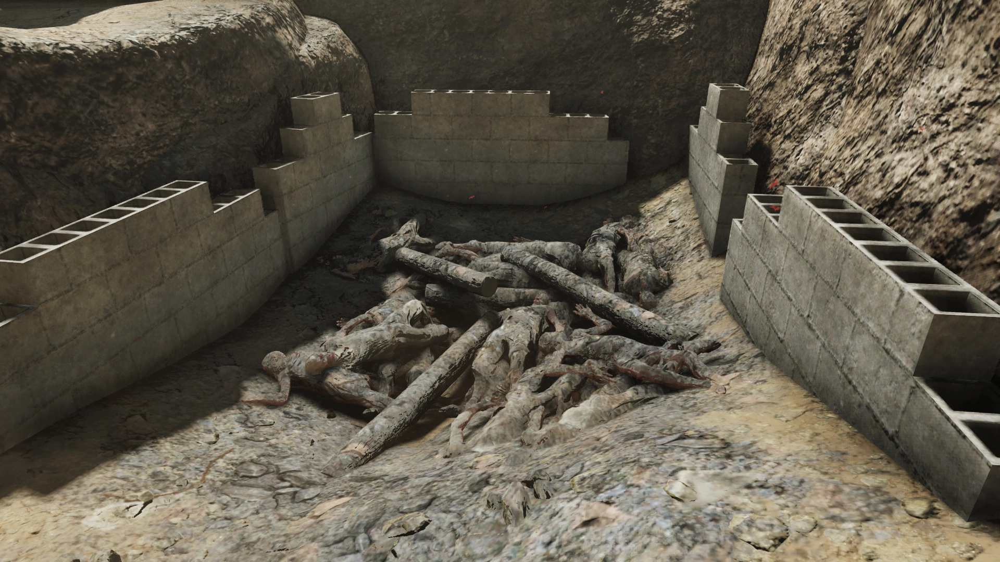
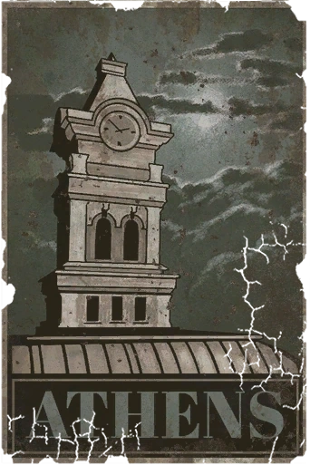

Athens
アテネ
「かつて戦前の大学町として、そのフットボールチームとハロウィン祭への不滅の愛で知られたアテネは、今やグールとラッドローチだけが残る干からびた殻と化している。」
概要
Athensは、アパラチアのバーニング・スプリングス地域に位置する大規模な廃墟のロケーションである。Fallout 76の「Burning Springs」アップデートで登場する。ホッキング大学の所在地であったが、大戦後は放棄され、危険な場所となったオハイオの町。
背景：戦前
大戦前、アテネはホッキング大学という東部オハイオの主要高等教育機関が所在する大学町だった。1797年に開拓が始まり、1804年に大学が設立。毎年恒例で1974年以降人気だったハロウィンの祭りも開催されていた。近隣にはアテネ精神病院、フットボールスタジアム、アブラクソダイン・ケミカルのオフィスもあった。
背景：大戦後の崩壊
爆弾が落ちた時、アテネは直接の攻撃を受けなかった。しかしオハイオ州兵のリチャード・マーフィー大尉が率いる部隊が町に展開し、秩序維持に努めた。通信は断絶し、市長は心臓発作で死亡し、警察署長は行方不明。
大戦直後、アブラクソダイン・ケミカルの列車がアテネで脱線し、プロジェクト・メドウ・ブリーズの化学物質が流出。赤い有毒物質が環境に浸透し、水を汚染した — 「ラスト（錆）」の最初の拡散の一つとなった。
地震活動がインフラを破壊し、学生たちが建設した浄水器は暴動で破壊され、町は急速に崩壊していった。グール化した郵便配達員の出現を契機に恐怖が頂点に達し、焼却坑での死体処分、封鎖、そして最終的な放棄へと至った。
2077年12月21日、マーフィー大尉は状況を「維持不可能」と宣言し、兵士たちを解放。自らは武器庫を守るために残った。軍医グリアーは武器庫の鍵を持って東へ去った。
ターミナルエントリ
マーフィー大尉の日誌
我々の任務は救援と秩序維持で、増援が来るまで持ちこたえることだ。アテネの民間防衛物資を除けば、資源はほとんどない。上官、陸軍、州知事との通信を確立できていない。民間の行政機関は混乱状態だ。アテネの市長は最初の1時間で心臓発作で亡くなった。警察署長の行方は不明。コロンバスやクリーブランドとも連絡が取れない。
攻撃を受けたのかもしれない。分からない。今のところ、我々は孤立しているようだ。長くないことを祈る。
地盤が落ち着くにつれて被害は複合的になると告げられている。町の地形は劇的に変わり、区画全体が崩壊する可能性もある。インフラ、特にパイプへの被害も深刻だ。厳格な配給制を敷くしかない。
アテネに既にいる人々に食料を供給することさえ、我々のわずかな物資を圧迫している。信頼できる水源の突然の喪失により、難民の流入を許可することはできない。アテネの国境を封鎖し、私の許可なく出入りすることを禁じた。
一部を失うか、全員を失うかの選択だ。選択の余地はない。
汚染された個人の焼却または追放が唯一の選択肢だ。衛生上、簡易焼却坑を使用しなければならない。これは悪夢だ。
国境は制御不能になった。民間人の大半が町を離れた。もう兵士たちに留まって死ぬことを命じる事はできない。
今できる最善のことは、武器庫の兵器がこの町の外の蛮行に使われないようにすることだ。
歴史は私を厳しく裁くかもしれない。本当に申し訳ない。最善を尽くした。
報告書
水が出てきて、良さそうだった。そこで誰かが「水がなくなる」と叫び、群衆が押し寄せた。バケツを持っていた男が押し倒され、きれいな水がこぼれた。列に戻るよう言い、威嚇射撃をした。効果なし。
群衆がクポウスキー二等兵に殺到し、ライフルを奪った。奪い取られた時、パニックになった。神よ許したまえ、我々は発砲した。煙が晴れた時、民間人3人とクポウスキーが死んでいた。浄水器も損傷していた。
そして突然、静寂が訪れた。壊れた大きな機械の周りに立ち尽くしていた。飲料水はもう、長い間手に入らないということを、全員が理解していた。
原因が何であれ、罹患者が驚くべき心理的不安定の兆候を示すことは明らかだ。精神病的エピソードと暴力的な爆発。彼らの恐ろしい外見が公共秩序を覆す恐れがある。
医療官として、あらゆる手段を用いて民間人の健康と兵士たちの命を守ることを勧告する。たとえその手段が野蛮に見えるとしても。
残酷な日々だ、リチャード。時間ごとに残酷さが増している。
あの郵便配達員のように。
どうやら町を監視しているようだ。数は着実に増えている。攻撃に備えることを推奨する。状況が急変した場合に備え、自由射撃の許可を要請する。
発見できるメモ
町中の誰もがあの衝撃音を聞いた。私たちはいつも線路のそばに住んでいたけど、今はどこにも住んでいないも同然だ。
爆弾のこと、戦争のこと…ニュースを聞いた後、私たちは教会でボランティアをしていた。ママは「今は人を助けることが一番自分のためになる」と言った。手が震えていた。泣いている人もいた。現実じゃないみたいだった。でも今は現実だ。
戦争のことを聞いた後すぐ、列車の音がした。脱線した列車が何を積んでいたか分からない。何かの化学物質？赤くて、すべてに染み込んだ。
家に戻ろうとしたら、列車からこぼれたものが目を焼き、咳が出た。兵士たちが来て、もうそこには戻れないと言われた。もう二度と。
ジューン、
ここから出なきゃ。人のように歩いていたけど、人であるはずのないものが今日アテネに入ってきた。広場を走り抜け、祭りの横を通って。叫び、暴れ回っていた。肉がはがれ落ちて、髪もなかった。服からすると、元は郵便配達員だったようだ。
兵士たちが撃ち倒すところを私は見ていた。何度も何度も撃たれても走り続けた。地面に倒れるまで走って叫んでいた。私をまっすぐ見つめていて、「助けて」と繰り返し口を動かしているようだった。
あれは元は人だったの？私たちにも起こりうるの？
今夜出発しなきゃ。
ーエイミー
ジェイク、
奴らに見られていると思う。夜が来て見えなくなるまで数える。先週は約30体。今夜は少なくとも60体だ。マーフィーはまだ発砲を許可していない。だから今は撃つな。何体見えるか数えるだけだ。
ーヴァンダーマン
ウィルソン学部長、
失礼ながら、あなたの演説には反対です。マーフィー大尉には私たちの外出や隣人への援助を禁じる権利はありません。彼らはすぐそこにいるんです。外国にいるわけじゃない。彼らもアメリカ人です。子供もいるんですよ。
大事なのは人だけです。今、人は助け合わなければ。
今夜外に出ます。何人かの学生や町民が一緒に来ます。
ージェローム・シムズ、ホッキング・ヒルズ大学2078年度学生会長
ジェローム、
あなたの心が正しい場所にあるのは分かってる、こっそり出て行って田舎の人々に物資を届けたいって。でも私たちはどうなるの？私たちだって物資が必要なのよ。なぜ彼らの命が私たちのより大事なの？
あなたが私を探す頃には、もういないわ。
ーエレン
ママ、
大学生たちと一緒に外に出ました。助けたかったの。食料と水を持って行ったけど、オールバニーに着いた時にトラブルに巻き合った。銃を持った人たちに出会った。助けに来たと言ったのに、全部奪われた。ジェロームは撃ち殺された。
町に戻ろうとしたけど、兵士たちが近づかせてくれなかった。水を飲んじゃいけないと知っていたけど、あまりにも喉が渇いて。今みんな具合が悪い。髪が抜けてきた。腫瘍もある。痒くて熱い。マージは話すのが難しくなっていて、鼻が黒くなりかけている。
本当に怖い。出るべきじゃなかった。愛を込めて、
ージャネット
アイザック、
今は本当に辛いけど、冷静でいなきゃ。私たちが学んだことを活かさないと。ホッキングで勉強を始めた時、こんなに早く本物のエンジニアリングをするとは思ってなかった。でも誰かが爆弾を落とすことにした時、予想は無意味になった。
今、この浄水器を動かす方法を見つけないと、人が死ぬ。
あなたを信じてる。私たちを信じてる。
愛を込めて、
ーマーシャ
フランクは20年来の隣人だ。息子が腕を折った時は病院に連れて行った。牛乳配達の仕事がなくなった時はアブラクソダインの工場の仕事を見つける手伝いをした。昨夜目が覚めたら、フランクが家の中にいた。窓から忍び込んでいた。水を盗もうとしていた。私を見ると立ち去ろうとした。何も言わなかったが、泣いていた。私たちに何が起きているの？
マーフィー、
いつまで持ちこたえられるか分からない。遅かれ早かれ、誰かが我々を圧倒して武器庫に押し入るだろう。
鍵を持って東へ向かう。線路沿いに。もっと安全な場所を見つけられるかもしれない。
我々にできる最後の善行は、あの武器を封印しておくことだ。武器はこの世界にもう十分な犠牲を強いた。
ーグリアー
スティーブ、
寮でのまた一晩の不眠が天啓をもたらした。外にはどれだけのものが転がっているか考えたことあるか？誰でも持っていけるんだ。心優しい連中と一緒にこっそり抜け出して、町の外の人々に物資を届けた。そこで気づいた。彼らがどれだけ弱いか。助からないだろう。助けるのは時間の無駄だ。
チームから志を同じくする何人かを集めて、ここを出て、王様のように暮らそうぜ。
ーロッコ
これを読んでいるなら、シュミットが俺たちが言った通り殺してくれたということだ。アテネが手つかずの戦利品の伝説として語られるのには理由がある。だがあいつは大丈夫どころか心配なく金持ちになれると言い張った。
大学にキャンプを設営すると、あいつが正しかったように見えた。半数を偵察に送り、残りは休息。奴らの帰りが遅い。暗くなってきた。心配になってきた。
周りで何かが這い回る音が聞こえる。襲われたら逃げる。この紙を読んでいるなら、お前もそうすべきだ。
生まれてからずっとここに住んでいるが、この場所はもう見覚えがない。通りには兵士、町の外の道路には略奪者。そして今、人々の肌がはがれ落ち、狂ったように暴れまわっている。理由は誰にも分からないが、日に日に増えている。昼も夜も焼却坑の匂いがする。ここにいたくない。行くのが怖い。戦争を生き延びなければよかったと思う時がある。
グロリア、
発疹が広がっている。髪も少し抜けてきた。家に戻ってこないで。うつらないと言われたけど、念のためだ。姉のところにいなさい。外に出るのが怖い。兵士に見つかったら追い出されるか、監禁されるか、ミラー家がやられたように焼却坑に入れられるかもしれない。軟膏を見つけてきてくれないか。
ーカール
お母さん、一緒に来て。
何度もお願いしたのは分かってるけど、ここにいないで。ジーニーと私は今日の午後、次のスカベンジャーグループと出発する。カーティスがあの場所のことを詳しく教えてくれるから。あそこはここで死ぬよりましだと断言してる。
ここで汚い水を飲み続けたら死んでしまう。あの新しい場所にはきれいな食料、水、薬がたくさんある。
ーマックス
バック、
真夜中に会おう。バケツをできるだけたくさん持って来て。川からできるだけたくさん水を汲もう。あの学生たちが作った浄水器が本当に使えるかも？捕まるなよ。
ーサリー
ジューン、
ネズミが走り去るのを見て最初に思ったのは「夕食だ！」だった。信じられない。もうとっくに荒らされているだろうけど、もう一度道の先のスーパーデューパーマートに行けたらなあ。七面鳥のディナーとアイスクリームをありったけ掴んでくるのに。本当にたくさんのものを持っていたんだなって、考えたこともなかった。
ーエイミー
クリフの日記 11/15/2077
アブラクソダインを信用したことはなかった。解雇される前から、何かが間違っていると思っていた。知り合いのほとんどと同じように仕事に就いたが、本当に安全だとは信じていなかった。爆弾が落ちた時、あの施設に何が起きたか知らないが、有害物質が大気中に漏れ出している。あの化学物質、あのタンクが全部。
毒が至る所に。目と肺が焼ける。アテネを殺している。
生き残ったホッグ・ファンのみんなへ…
コロンバスの廃墟と荒野を踏破して、素晴らしいニュースを届けに来た。
ホースシューはもうない——地面にぽっかりと穴が空いてるだけだ！
確かに、過去15年間ずっと第1週でプレーオフから脱落してきたけど、
誰のスタジアムがまだ立ってるか、言ってみろよ！？
ゴー・ホッグス！
S・サリバンの記録、
正直シュミットのアテネの話を聞いた時は半信半疑だった。呪われた街、帰らずの場所…狂気の沙汰に聞こえるが、あの男は説得力がある。
だがあいつは正しかった。恐ろしい評判はただのホラ話だ。街は放棄されている。もう何時間もいるが、グール一匹見ていない。明日の夜にはブラーミンが運べるだけの戦利品を持って出られる。唯一の問題は、この稼ぎのキャップをどう使うかということだ。
関連クエスト
- Insurrection — ムースの信頼を得るため、アテネでラスト・レイダーのパトロールを待ち伏せするクエスト。
- Dirty Laundry — アテネ周辺を訪れると自動的に開始。アブラクソダイン・オフィスを調査し、ボーディと話す。
- 賞金稼ぎ：グラント・ハント — アテネが「アテネ廃墟」として対象ロケーションになることがある。
舞台裏
- 実在のオハイオ州アテネ市をモデルにしている。ホッキング大学はオハイオ大学に相当する。
- ゲーム内の建物の多くはオハイオ大学キャンパスの実在の建物をモデルにしている。
- 開発者ライアン・ジョンソンが「自分の故郷を作るなら、故郷を故郷たらしめるディテールを可能な限り再現したい」という思いでデザインした。
登場作品
AthensはFallout 76のBurning Springsアップデートにのみ登場する。
GALLERY





Burning Springs最大級のロケーションであるアテネは、21枚のメモとターミナルエントリを通じて、一つの大学町の完全な崩壊を描いています。
マーフィー大尉の日誌は、善意ある指揮官が絶望的な状況で下すしかなかった選択を冷徹に記録しています。「出るべきじゃなかった」のジャネットの手紙は、善意が裏目に出る残酷さを、「きっとうまくいく」のマーシャの励ましは浄水器の悲劇的な結末を知っているだけに胸を打ちます。
「唯一の問題（The only problem I got）」のように、何年も後にアテネの「安全神話」を信じてやってきたスカベンジャーたちの運命も、この町の呪いの根深さを示しています。
開発者ライアン・ジョンソンが故郷への愛情を込めて再現したこの町は、Falloutで最も密度の高いストーリーテリングの一つです。
This article was created by translating and editing Athens from Nukapedia: The Fallout Wiki.
Licensed under the Creative Commons Attribution-Share Alike License (CC BY-SA 3.0).
コミュニティ維持のため、寄付を受け付けております。
> COMMENTS_